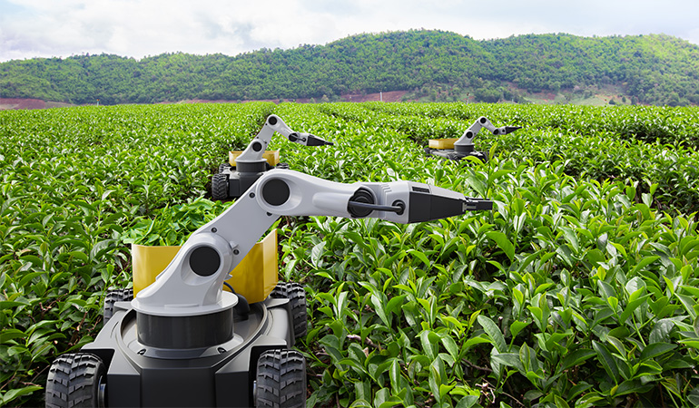

Artificial Intelligence (AI) is rapidly transforming various industries and reshaping our daily lives. By mimicking human cognitive functions, AI systems can learn from data, reason, and make decisions. The advancements in AI technology have led to innovative applications that enhance productivity, improve efficiency, and open new frontiers in various fields.
Advancements in Artifical Intelligence

Healthcare
AI technologies are improving diagnostics and personalizing treatment plans in healthcare, leading to better patient outcomes.
Automation
AI-driven automation enhances efficiency in manufacturing and logistics, reducing costs and improving speed.
Agriculture and Smart Farming
AI is being used in agriculture for precision farming, helping farmers optimize crop yields and manage resources efficiently.